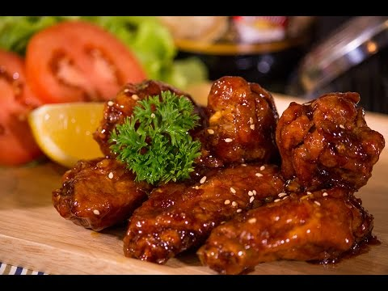

ไก่ทอดบอนชอน สูตรหม้อทอดไร้น้ำมัน

วัตถุดิบ
- ปีกไก่บน 500กรัม
- เกลือ 2ช้อนชา
- แป้งทอดกรอบ 8ช้อนโต๊ะ
- แป้งข้าวโพด 4ช้อนโต๊ะ
- กระเทียม 3กลีบ
- พริกไทย 1ช้อนชา
- โคชูจัง 3ช้อนโต๊ะ
- ขิงสับ 2ช้อนโต๊ะ
- น้ำผึ่ง 2ช้อนโต๊ะ
- โชยุ 2ช้อนโต๊ะ
- พริกป่นญี่ปุ่น 1ช้อนโต๊ะ
- งาขาว 2ช้อนโต๊ะ
- ไข่ไก่ 1ฟอง
ขั้นตอนวิธีการทำ
เวลาเตรียมส่วนผสม: 8ชั่วโมง
เวลาปรุงอาหาร: 1ชั่วโมง
- ล้างไก่ให้สะอาด ใส่น้ำให้ท่วมไก่ ใส่เกลือ 1ช้อนชา คนให้ละลายปิดฝา ใส่ตู้เย็นข้ามคืน
- สะเด็ดน้ำเกลือ หมักไก่กับไข่ไก่ กระเทียม พริกไทย เกลือ1/2ช้อนชา 20นาที
- แป้งเปียก: ผสมแป้งทอดกรอบ 6ช้อนโต๊ะ กับแป้งข้าวโพด 2ช้อนโต๊ะ เกลือ1/2ช้อนชา น้ำ คนให้ละลาย
- แป้งแห้ง: แป้งทอดกรอบ 2ช้อนโต๊ะ แป้งข้าวโพด 1ช้อนโต๊ะ คนพอเข้ากัน
- นำไก่ชุบแป้งทอดเปียก 3รอบ
- กลิ้งไก่บนแป้งแห้ง เขย่าแป้งส่วนเกินทิ้ง
- ใช้หมอขนาด 5L วางเนื้อไก่อย่าชิดกัน ใช้ไฟ 160องศา 15นาที กลับด้านไก่ทอดต่อ 15นาที
- ทำน้ำซอลด้วยโคชูจัง ขิงสับ น้ำผึ่ง โชยุ พริกป่นญี่ปุ่น งาขาว น้ำเปล่าเล็กน้อย ใส่หมอทอดไฟ 150องศา 15นาที
- คลุกไก่ทอดกับซอลให้ซอลเคลือบไก่เต็มชิ้น
- เสร็จพร้อมเสริฟ